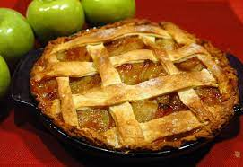

Apple Pie

A flaky, tasty delight
This American classic is the pinnacle of what this
great country has to offer. Slimy apples encased in
a buttery, brownd shell, topped with homemade vanilla
icing, is the perfect compliment to a Fourth of July
picnic.
Ingredients
- Apples
- Sugar
- Lemon Juice
- Flour
- Butter
- Cinammon (optional)
- Vodka (not optional)
Our Apple Pie Recipe
- Mix apples, sugar, lemon juice, and sugar in a large bowl. Set aside.
- Mix flour, butter, and cinammon into a dough. Create one circle and a bunch of stripes.
- Drape the circle over the bottom of a prepped pie dish.
- Pour in apple mixture.
- Layer dough stripes like so.
- Leave pie out in the noonday sun for 4 hours and pray.
- Eat with a spoonful of homemade vanilla ice cream and a heft mug of vodka.